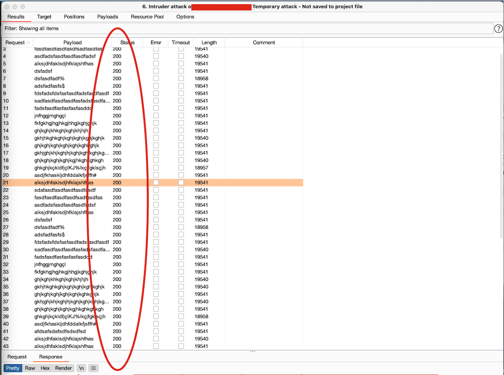
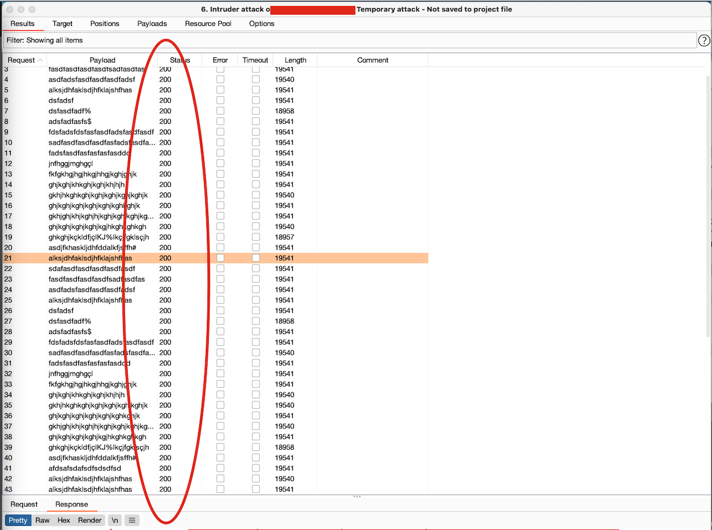

Since the beginning of the internet we had login forms, accounts and sign ups all around it. Companies that provide a service as cloud storage and file sharing rely on these types login forms to authenticate users into their accounts. One of the most typical attacks against these mechanisms is the brute force attack. Basically an attacker has a list with lots and lots of emails and passwords found on the internet(e.g.:The rockyou password list) from leaks happening every year and tries every single one of them with different combinations into login forms. Even before these attacks starting to hit the internet we already had mechanism to prevent invasion and information stealing. The most common ones today are either raise a CAPTCHA to prevent automated attempts to login, or a server-side blocking by raising an HTTP 429 - Too many requests or a less common is to lock accounts.
The two first mentioned in particular have little drawbacks to a legitimate user: a puzzle solving for CAPTCHA or waiting couple of minutes depending on the implementation for a server-side HTTP blocking. The third one has a much more complicate drawback. As state in the Common Weakness Enumeration 645 (CWE-645) a lock mechanism too restrictive and that can be triggered too easily, may allow attackers to deny service to legitimate users by causing their accounts to be locked out. This means that an attacker can use this very security feature to make a mass account lockout if the application is not protected against automated brute force login attacks. It is therefore important to ensure that the account lockout security mechanism is not overly restrictive.

This behavior allowed me to perform multiple attempts to login into a certain account and after intentionally failing in all of those I was able to deny the user to login into the account even with the right password fo at least 2 hours. The legitimate user was not warned, it was not asked to reset passwords and without knowing the cause had their access blocked. And makes it worse is that after 2 hours passed the attacked could again repeat the process and keep the account locked. Despite the security feature is important to prevent information stealing an overly restrictive account lock can deny access to the legitimate user.
The alternatives in this case are simple: either raise a CAPTCHA and prevent the same type of request over and over or raise an HTTP 429. The second one will not only protect the server-side against Denial-of-Service attacks but will also protect the user if combined with a warning via email telling someone try to access his account with wrong passwords.
In summary is not a good practice lock your customers accounts every time someone makes wrongly attempts into their accounts. It should be in place protections to make this mechanism the last resource required to protect the account.
The two first mentioned in particular have little drawbacks to a legitimate user: a puzzle solving for CAPTCHA or waiting couple of minutes depending on the implementation for a server-side HTTP blocking. The third one has a much more complicate drawback. As state in the Common Weakness Enumeration 645 (CWE-645) a lock mechanism too restrictive and that can be triggered too easily, may allow attackers to deny service to legitimate users by causing their accounts to be locked out. This means that an attacker can use this very security feature to make a mass account lockout if the application is not protected against automated brute force login attacks. It is therefore important to ensure that the account lockout security mechanism is not overly restrictive.
Lets see an example
During a recently bug discovery I notice that the login form is not restrictive at all either in the server-side or programatically with CAPTCHA against multiple login attempts via Burp, as can bee see in the image.
This behavior allowed me to perform multiple attempts to login into a certain account and after intentionally failing in all of those I was able to deny the user to login into the account even with the right password fo at least 2 hours. The legitimate user was not warned, it was not asked to reset passwords and without knowing the cause had their access blocked. And makes it worse is that after 2 hours passed the attacked could again repeat the process and keep the account locked. Despite the security feature is important to prevent information stealing an overly restrictive account lock can deny access to the legitimate user.
The alternatives in this case are simple: either raise a CAPTCHA and prevent the same type of request over and over or raise an HTTP 429. The second one will not only protect the server-side against Denial-of-Service attacks but will also protect the user if combined with a warning via email telling someone try to access his account with wrong passwords.
In summary is not a good practice lock your customers accounts every time someone makes wrongly attempts into their accounts. It should be in place protections to make this mechanism the last resource required to protect the account.